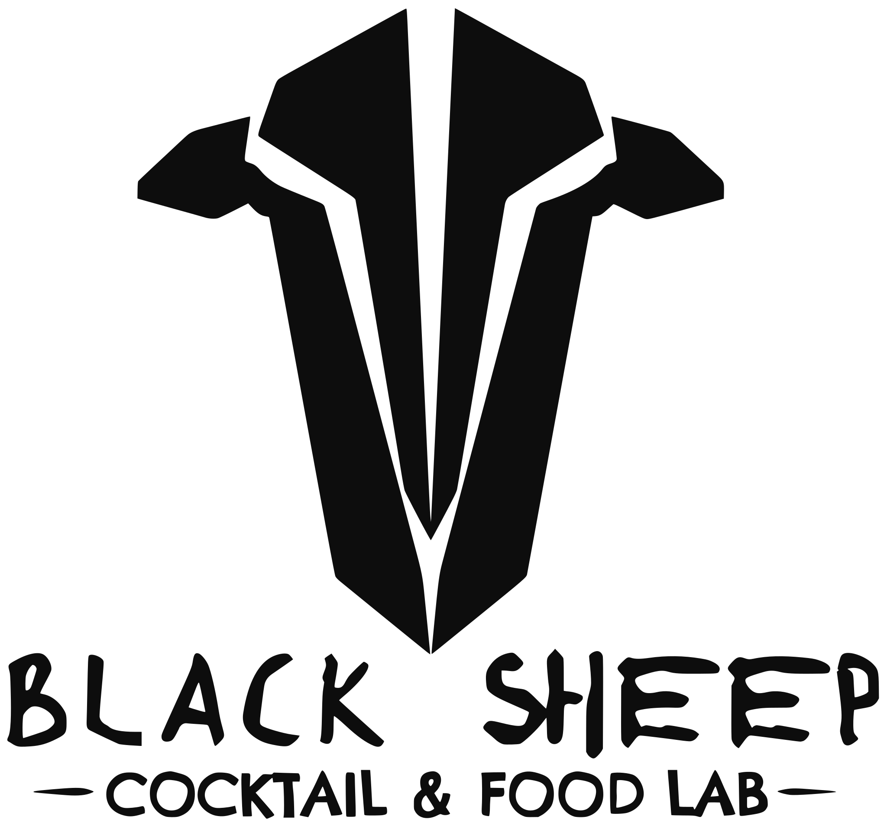
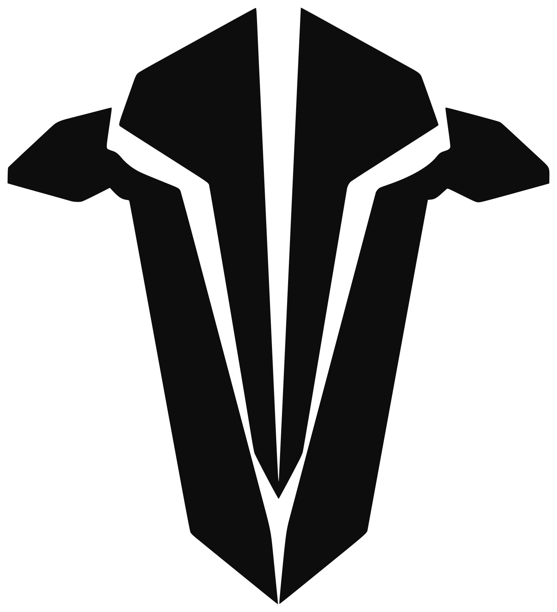

Black Sheep — analisi del logo
Logo definitivo, misurato sul file 2481×3508 fornito dal cliente. Il disegno non viene modificato: queste tavole mostrano solo come è costruito e come può essere usato.
01Costruzione
gli archi appartengono a un cerchio centrato sull'asse della testa · la testa esce dal cerchio in alto · la punta del muso cade nello spazio tra BLACK e SHEEP
02Proporzioni
Formato quasi quadrato, 1,08 : 1.
Testa: 67% della larghezza, 80% dell'altezza.
BLACK SHEEP: tutta la larghezza, lettere alte l'11,4% del logo (= X).
Payoff: lettere alte il 5,7% del logo, la metà di X.
Archi: 95% della larghezza, chiusi dalla testa in alto e dalla scritta in basso.
Il payoff è l'elemento più fragile: sotto i 110 px di altezza del logo (circa 25 mm in stampa) le sue lettere scendono sotto i 6 px e non si leggono più.
03Famiglia di angoli della testa
Quasi tutte le linee lunghe sono verticali inclinate di 5–15°: il muso converge verso una punta. Le diagonali a 30° del tetto e le orecchie quasi orizzontali danno le altre due direzioni.
04Configurazioni consentite (estratte, non ridisegnate)

Senza archi · profilo Instagram
Solo testa · da approvare

05Prova di leggibilità a schermo
A 60 px il payoff si impasta e i bordi degli archi diventano rumore; la testa da sola resta riconoscibile anche a 16 px.
06Tre linguaggi in un solo segno
1. Testa: geometria netta, sfaccettata, simmetrica, con sottili tagli in negativo.
2. Archi: pennello secco, bordi sfrangiati, imperfetti.
3. Scritta: BLACK SHEEP a mano, irregolare e un po' graffiante; payoff più morbido e rotondo, tra due trattini a pennello.
La tensione tra precisione (lab) e gesto (pecora nera) è la cosa più interessante del logo. Il sistema non deve aggiungere una quarta voce espressiva.